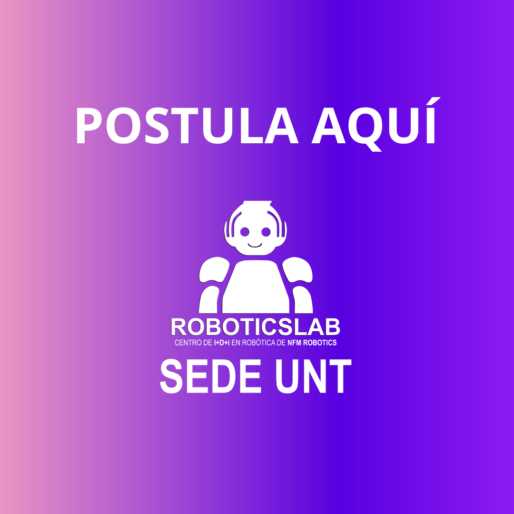

El RoboticsLab es una división de NFM Robotics que se dedica a iniciativas sin fines de lucro enfocadas en investigación, desarrollo e innovación en robótica.
Somos una sede del Centro+I+D+I NFM Robotics, RoboticsLab, impulsando la robótica en la Universidad Nacional de Trujillo.
Ser líder en investigación, desarrollo e innovación en robótica, comprometido con el avance tecnológico y el fomento de una cultura tecnológica en la Universidad Nacional de Trujillo.
Ser un referente regional en investigación, desarrollo e innovación, contribuyendo a reducir la brecha tecnológica en el Perú y transformando a la Universidad Nacional de Trujillo en un punto clave de innovación tecnológica a través de nuestros avances en robótica.
Líder de sede en RoboticsLab UNT, estudiante de ingeniería mecatrónica con gran pasión por la innovación tecnológica.
Líder asociado en RoboticsLab UNT, estudiante de ingeniería mecatrónica apasionado por la excelencia académica y el desarrollo de tecnología.
Asesor de RoboticsLab UNT, docente universitario y destacado investigador Renacyt en el área de la IA.
Líder de proyectos en RoboticsLab UNT, estudiante de ingeniería industrial apasionada por la planificación y ejecución de proyectos de alto valor.
Líder de comunicaciones en RoboticsLab UNT, estudiante de ciencias de la comunicación con gran pasión por la planificación y creación de contenido audiovisual de alto impacto.
HRFest: Preliminar Trujillo
Fecha: 3 y 4 de agosto
Descripción:
Torneo de robótica preliminar para el evento HRFest 2024, con premios en efectivo y donde los primeros lugares obtienen pase a los octavos de final del HRFest 2024 y acreditaciones a torneos mexicanos.
Humanoid Robotics Festival 2024
Fecha: 14 al 16 de agosto
Descripción:
El primer festival de robótica humanoide en toda Latinoamérica, se desarrollarán actividades como torneo de robótica, ponencias, expoferia de stands, etc.
Participa y aprende sobre la planificación, desarrollo y ejecución de proyectos de investigación, actividades tecnológicas, etc.
Participa y aprende sobre el desarrollo de piezas graficas y audivisuales, ademas de planificación de actividades de marketing y apoya a la mejora de como RoboticsLab UNT se ve al público.
Participa y aprende sobre el manejo del talento humano, apoya en la mejora de la relación entre los voluntarios de RoboticsLab UNT, soluciona y previene conflictos.
Participa en innovadores proyectos de investigación, desarrolla prototipos roboticos que apoyen al desarrollo tecnológico en nuestra región, participa en la publicación de articulos de investigación. Este comite esta dirigido a estudiantes de UNT de carreras de ciencias e ingeniería. (Es necesario pertenecer a uno de los comites anteriores).
No importa tu carrera o especialidad, puedes participar en el comite que mas se acomode a tus conocimientos actuales o puedes aprender perteneciendo a uno de ellos (Proyectos, comunicaciones o recursos humanos), lo mas importante para nosotros es tu actitud.
Tambien puedes pertenecer al voluntariado de la sede central del RoboticsLab [Aquí].